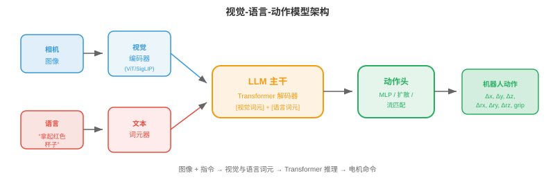
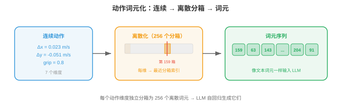
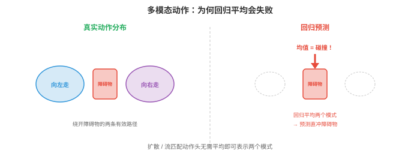

视觉-语言-动作模型¶
视觉-语言-动作模型（Vision-Language-Action models，VLAs）将看见、理解语言和行动统一到单一神经网络中。本节涵盖 VLA 架构、动作词元化、RT-2、Octo、OpenVLA、预训练策略、泛化、具身无关模型和基准。
- 前两节介绍了感知，即感受世界，和机器人学习，即控制身体。传统上，它们是相互独立的流水线：感知模块检测物体，语言模块解释命令，控制模块生成动作。每个模块都独立设计、训练和调试。
大白话
传统系统像接力赛：看图、懂话、控制分别由不同模块完成。模块清楚，但信息在交接时可能丢失，整体也难一起优化。
- 视觉-语言-动作模型（Vision-Language-Action models，VLAs）将这一流水线压缩为单一神经网络。模型输入图像，视觉，和自然语言指令，语言，输出电机命令，动作。一个模型，端到端。
大白话
VLA 让同一个模型同时看环境、理解命令并决定动作，尽量不把中间理解拆成许多固定规则。
- 这延续第 10 章所见的统一化趋势：多模态模型将视觉和语言理解合并到一个架构，VLA 则将其扩展到物理行动。关键洞见是语言提供自然、灵活的任务指定接口，例如“拿起红色杯子并放到架子上”，而大型预训练视觉语言模型已经理解图像和指令。
大白话
语言让人不用写低级坐标命令，直接说目标即可。VLA 借用已有 VLM 的看图和懂话能力，再学习把理解变成动作。
从视觉语言到行动¶
- 回顾第 10 章，LLaVA、Flamingo 等视觉语言模型（Vision-Language Models，VLMs）以图像和文本为输入，以文本为输出。它们能理解场景、回答问题、遵循指令，全都以语言完成。
大白话
普通 VLM 能看图后回答“杯子在哪”，但它的输出仍是一段文字，不能直接让机械臂动起来。
- VLA 提出的问题是：若输出不是文本，而是机器人动作（robot actions），会怎样？模型不再生成“红色杯子位于桌子左侧”，而是生成一串电机命令，使机械臂移动并抓住该杯子。
大白话
VLA 把“说出正确答案”升级成“做出正确动作”。它必须把对杯子的理解转成真实、连续的机械运动。
- 关键架构洞见是，动作可以像词语一样表示为词元。VLM 用下一个词元预测逐个生成语言词元，VLA 以同样方式生成动作词元。Transformer 从根本上并不在乎输出词元的含义是“杯子”还是“将夹爪向前移动 2cm”。
大白话
只要把动作编码成有限 token，Transformer 的“预测下一个 token”能力就可以复用到控制问题上。
- 这将机器人控制重构为序列建模问题，Transformer 在此类问题上表现出色，第 7 章。模型学习映射：（图像观察、语言指令）\(\to\)（动作词元序列）。
大白话
VLA 的核心任务变成：看到当前画面、读懂任务后，续写出一段合适的动作序列。
VLA 架构¶

- 典型 VLA 有三个组成部分：
大白话
VLA 通常分成看图的入口、负责联合理解的核心，以及把内部结果变成动作的出口。
-
视觉编码器（vision encoder）：将相机图像处理为视觉词元。通常是预训练 ViT，第 8 章，或 SigLIP 编码器，第 10 章。图像被切分为图块，每块嵌入为一个词元，与标准视觉 Transformer 完全相同。
大白话
视觉编码器把相机画面切成许多小块并变成向量，让语言模型也能读取视觉信息。
-
语言模型主干（language model backbone）：预训练 LLM，如 LLaMA、PaLM，处理视觉词元与语言词元的交错序列。推理在此发生：模型通过同时关注指令与视觉特征，理解“拿起红色杯子”。
大白话
LLM 主干把“画面里有什么”和“用户要什么”结合起来，判断该选哪个物体、该做什么。
-
动作头（action head）：将 LLM 输出映射到机器人动作。它可以是将最后隐藏状态映射为连续动作值的简单 MLP，也可以是将动作转换为离散词元、由 LLM 既有词汇表预测的词元化方案。
大白话
动作头是最后的翻译器，把模型内部理解变成关节速度、位置或夹爪开合等可执行命令。
- 架构如下：
大白话
图片先变视觉 token，命令先变文字 token，再由同一个 LLM 读两者并输出动作 token。
- 视觉词元与语言词元拼接，或交错，后输入 Transformer 主干，后者自回归地产生动作词元。这与 VLM 架构相同，第 10 章，只是输出模态由文本改为动作。
大白话
结构和看图说话的 VLM 很接近，真正变化的是最后不再续写文字，而是续写机器人该怎么动。
动作词元化¶
- 机器人动作是连续的：关节速度、末端执行器位置、夹爪宽度。必须将它们转换为离散词元，供 LLM 生成。
大白话
机器人动作本来是连续小数，而 LLM 擅长选离散 token，所以必须先规定怎样把小数翻成编号。

- 最简单方法是均匀离散化（uniform discretisation）。每个动作维度被划分为 \(N\) 个分箱，覆盖有效值范围。例如，若 x 速度范围为 -0.1 至 0.1 m/s，使用 256 个分箱，每个箱代表 \(\frac{0.2}{256} \approx 0.8\) mm/s。动作值映射到最近的分箱索引，该索引成为一个词元。
大白话
均匀离散化把连续范围切成许多等宽档位。动作不再精确到任意小数，而是选择最接近的档位编号。
- 对 7 个动作维度，6 个自由度加夹爪，每维 256 个分箱，动作词汇表有 \(7 \times 256 = 1792\) 个词元。它们加入 LLM 既有文本词汇表。模型为每个维度自回归地生成一个动作词元，如同生成词语。
大白话
每个关节或夹爪维度都有自己的一组动作编号，模型像写词一样逐个选编号，合起来就是一条七维控制命令。
- 动作分块（action chunking）一次预测多个未来时间步，而非单个动作。若块大小为 \(H\)，模型输出 \(H \times d\) 个词元，其中 \(d\) 是动作维度。这对平滑、时间连贯的运动至关重要。逐步预测会产生抖动行为，因为每次预测相互独立。分块迫使模型规划短轨迹，捕获时间结构。
大白话
一次只想下一步容易抖动和漂移；一次想一小段轨迹能让伸手、转弯等连续动作保持平滑。
- 更复杂的方法经由 VQ-VAE，第 10 章，使用学习到的词元化（learned tokenisation）。VQ-VAE 编码器将连续动作序列映射为离散码本索引序列，解码器再从这些索引重建连续动作。LLM 此时生成码本索引，而非均匀分箱值。这类似第 10 章图像词元器将视觉信息压缩成紧凑离散编码的方式。
大白话
学习到的词元化不按固定刻度切动作，而是让模型自己发现常见、有效的动作片段，并给它们编号，表达力通常更高。
关键 VLA 模型¶
- RT-2（Robotic Transformer 2，Google DeepMind）是首个大规模 VLA。它采用预训练 VLM，PaLM-E 或 PaLI-X，最高 550 亿参数，并在机器人示范数据上微调。动作表示为文本字符串：词元序列“1 128 91 241 5 101 127”编码一个七维动作，每个数字为分箱索引。
大白话
RT-2 直接复用大视觉语言模型，再把每个动作维度的分箱编号当成数字文本输出，是把 VLM 接到机器人控制上的早期大规模尝试。
- RT-2 展示了一个显著特性：来自 VLM 主干的涌现能力（emergent capabilities）可迁移到机器人学。模型能遵循涉及从未出现在机器人数据中的概念的指令，例如“将香蕉移到以 A 开头的国家”，这需要视觉物体识别、世界知识和行动。VLM 的语言理解和视觉推理仿佛“免费获得”。
大白话
机器人示范没教过的常识，可能已被 VLM 从互联网图文中学到。VLA 因此能把已有知识拿来完成新指令。
- RT-2 的局限是它在单一机器人具身的数据上训练，即特定机械臂与特定夹爪。它不能泛化到不同机器人。
大白话
它会理解任务，不代表会控制另一台身体。换了关节、夹爪或相机后，原来的动作编号已不再表示同一件事。
- Octo（UC Berkeley）是开源、具身无关（embodiment-agnostic）的 VLA，设计为跨不同机器人平台工作。其关键创新包括：
大白话
Octo 的目标是让一个模型服务多种机器人，而不是每换一台机械臂就从头训练一套策略。
- 使用扩散动作头（diffusion action head）而非自回归词元预测。动作头接收 Transformer 输出，经去噪扩散过程，第 8 章，产生动作。这可自然处理多模态动作分布，见下图，其中一个任务有多种有效完成方式。
大白话
扩散动作头能保留多条有效动作路径，不必把不同选择平均成一条危险或无效的中间动作。

- 灵活的观察与动作空间（flexible observation and action spaces）：Octo 针对不同机器人构型使用任务专用词元器。它在 Open X-Embodiment 数据集上预训练，该数据集包含来自 22 种不同机器人具身的示范。
大白话
不同机器人有不同传感器和关节，Octo 用各自的接口把它们接进共同主干，再从多种机器人示范中学习共通规律。
- 高效微调（efficient fine-tuning）：Octo 用少至 100 个示范即可微调到新机器人，因此对数据有限的实验室具有实用性。
大白话
预训练让模型已有通用操作常识，换新机器人时只需少量示范校准身体差异，成本更低。
- OpenVLA（Stanford、UC Berkeley）采用为机器人学微调既有开源 VLM，基于 Llama，的路径。它使用 70 亿参数主干、均匀动作词元化，每维 256 个分箱，并在 Open X-Embodiment 数据上训练。其强项是简单：架构就是在词汇表中追加动作词元的标准 VLM，易于用现有 LLM 基础设施训练和部署。
大白话
OpenVLA 选择最直接的工程路线：给现成 VLM 增加动作 token，再用机器人数据微调。它不花哨，但能复用成熟开源训练工具。
- \(\pi_0\)（Physical Intelligence）代表最先进水平。它使用预训练 VLM 主干与流匹配（flow matching）动作头，第 8 章。流匹配通过学习将噪声输运至动作分布的速度场来生成动作，产生平滑、时间连贯的动作轨迹。\(\pi_0\) 展现出显著通用性，能跨多个机器人具身完成任务，包括双臂操作和灵巧手控制。
大白话
\(\pi_0\) 用 VLM 负责理解任务，用流匹配产生连续动作轨迹，重点是在不同机器人身体上仍保持平滑、可迁移的操作能力。
预训练方案¶
- VLA 从已经理解视觉场景和语言的预训练 VLM 主干中极大受益。训练流水线通常遵循以下阶段：
大白话
VLA 通常不从零学习看图、读话和控制，而是先借用成熟 VLM，再逐步加入机器人数据教它行动。
-
VLM 预训练（VLM pretraining）：在互联网数十亿图文对上训练，或直接使用现成的，视觉语言模型，如第 10 章介绍的 CLIP、SigLIP、LLaVA 风格训练。
大白话
第一步让模型先建立广泛视觉和语言常识，学会物体、属性和指令表达。
-
机器人数据协同训练（robot data co-training）：在互联网数据与机器人示范数据的混合物上微调 VLM。互联网数据防止灾难性遗忘视觉和语言理解，机器人数据教授动作生成。混合比例很重要：过多机器人数据会损害语言理解，过少则无法学会动作。
大白话
第二步同时喂普通图文和机器人示范，既保住看懂世界的能力，又学会把理解转成动作。
-
任务专用微调（task-specific fine-tuning）：可选地在特定任务或机器人的示范上微调，常使用 LoRA，第 10 章，以保持可训练参数数量较少。
大白话
最后可针对某台机器人或任务小范围调整，不必重新训练全部大模型。
- 机器人数据量比互联网数据小多个数量级。VLM 可能在数十亿图像上预训练，而最大机器人数据集，Open X-Embodiment，跨全部具身只包含数百万帧。这种数据稀缺说明从预训练 VLM 开始为何至关重要：视觉与语言表示可迁移，只有动作映射需要从有限机器人数据中学习。
大白话
机器人数据远比网络图文少，所以必须先靠大规模预训练学通用认知，再把有限真实示范集中用于学动作接口。
泛化¶
- VLA 的承诺是泛化（generalisation）：在未见过的环境中，使用未见过的物体，遵循未见过的指令，完成训练时未见过的任务。
大白话
真正有价值的 VLA 不该只会复现训练录像，而要能遇到新物体、新说法和新场景时仍做对事。
- VLA 沿多个轴进行泛化：
大白话
泛化不能只看一个总分，要分别检查它面对新物体、新命令、新环境和新机器人的表现。
-
新物体（novel objects）：VLM 主干从互联网预训练中识别物体。若模型从网络图像知道“螺丝刀”的外观，即使没有机器人示范包含螺丝刀，它也能操作螺丝刀。
大白话
先前学到“螺丝刀长什么样”，能让模型在没见过机器人示范时仍先找对对象。
-
新指令（novel instructions）：组合式语言理解让模型遵循已知概念的新组合。即使训练只展示叠放红色积木，“将蓝色积木叠在绿色积木上”也能奏效，因为模型从语言预训练理解颜色形容词。
大白话
模型若真正理解“颜色、叠放、物体”的组合，就不必见过每一句完整指令才能执行。
-
新环境（novel environments）：在一定程度上，VLA 可跨视觉域迁移，不同桌子、光照、背景，因为视觉编码器在多样网络图像上预训练。但这有极限：在实验室训练的机器人可能在杂乱厨房中吃力。
大白话
多样预训练能让模型不那么依赖固定桌面和灯光，但现实杂乱程度超过训练覆盖时，它仍会失常。
-
新具身（novel embodiments）：这是最难的轴。不同机器人有不同动作空间，关节角与末端执行器速度；不同传感器，腕部相机与顶部相机；以及不同物理能力。Octo、\(\pi_0\) 等具身无关模型通过灵活词元器和跨多类机器人的预训练来解决它。
大白话
换身体最难，因为同一个高层意图要翻译成完全不同的关节、视角和力学。具身无关模型专门学习这层翻译。
- 泛化在留出任务（held-out tasks）上评估：要求机器人完成从未训练过的任务。新任务上 50 至 80% 的成功率被视为强结果，相比之下分布内任务超过 90%。随着模型扩大和机器人数据集增长，这一差距正缩小。
大白话
真正检验泛化要用从未训练过的任务。新任务成功率明显低于熟悉任务，说明这仍是 VLA 的核心难题。
具身无关模型¶
- 该领域正走向一个模型，多个机器人（one model, many robots）。不再为每台机器人训练单独策略，而是让单一 VLA 处理多个具身。
大白话
目标是不再给每台机器人单独培养一个大脑，而是训练一个通用大脑，再让它适配不同身体。
- 这要求解决动作空间不匹配（action space mismatch）问题。带平行夹爪的七自由度机械臂有七个动作维度；双臂系统有 14 个；四足机器人有 12 个；人形机器人有 30 多个。动作词元化必须足够灵活才能处理全部情况。
大白话
不同机器人能动的部位和数量不同，同一句“拿起来”不能直接复用同一串关节数字，必须先解决动作表示不一致的问题。
- 解决方案包括：
大白话
常见做法要么把动作向量补齐，要么给每种身体留小型输出接口，要么把动作改写成共同坐标系里的高层含义。
-
填充动作向量（padded action vectors）：使用最大动作空间，以零填充较小空间。
大白话
把所有机器人动作都放进最长向量，缺少的关节用零占位，简单但会浪费一些表示空间。
-
每具身动作头（per-embodiment action heads）：共享 Transformer 主干，为每种机器人类型配置独立小型 MLP。
大白话
大脑共享理解能力，最后一步按不同机器人换专用翻译器，适配最直接。
-
归一化动作表示（normalised action representations）：在共同坐标系表达全部动作，例如世界坐标系中的末端执行器速度，使产生相似末端动作的不同机器人共享相同动作词元。
大白话
不直接说“第 3 关节转多少”，而是说“手向前移动多少”。高层动作一致时，不同身体更容易复用策略。
- 共享主干学习通用视觉与语言理解，以及常见操作策略，从上方接近、对准物体、闭合夹爪。具身专用组件只需将这些高层策略翻译为具体电机命令。
大白话
通用主干负责学“怎么拿杯子”这类常识，具体机器人接口只负责把常识翻译成自己的马达命令。
基准与评估¶
- 评估 VLA 有独特挑战，因为它需要物理机器人实验，或高保真仿真。
大白话
VLA 不能只在文本答题上打分，必须看真实或高保真模拟里的动作是否完成任务，测试成本更高。
- SIMPLER（Simulated Manipulation Policy Evaluation for Robot learning）提供标准化模拟环境，无需物理硬件即可比较 VLA 性能。它与真实世界成功率有良好相关性，并支持可复现基准测试。
大白话
SIMPLER 用统一模拟任务替代每家实验室各自测一遍，方便低成本、公平地比较不同 VLA。
- 真实世界评估（real-world evaluation）仍是金标准。典型流程为：
大白话
模拟分数再好，最后仍要让真实机器人实际执行。评估要有明确任务、重复试验和统计不确定性。
-
定义一组具有明确成功标准的任务，物体到达目标位置、选择正确物体、在时限内完成任务。
大白话
先把“成功”说清楚，避免用模糊印象判断机器人做得好不好。
-
每项任务运行 \(N\) 次试验，通常 10 至 50 次。
大白话
一次成功可能只是运气，必须重复多次才能看出真实稳定性。
-
报告带置信区间的成功率。
大白话
不只报一个百分比，还要说明统计波动范围，避免把少量试验的偶然结果当成能力。
-
包含留出，即从未训练过的，任务来度量泛化。
大白话
必须加入没练过的任务，才能检验模型是不是理解并泛化，而非背下示范。
- Open X-Embodiment 数据集和基准汇集 22 家机构、多个机器人平台的机器人数据。它提供标准化示范共享格式和跨具身迁移的通用评估套件。
大白话
Open X-Embodiment 把多家机构、不同机器人的示范汇成共同格式，为训练和评估通用机器人模型提供基础数据。
编码练习（使用 CoLab 或 notebook）¶
-
实现动作词元化：将连续动作离散为分箱并重建。观察量化误差如何随分箱数变化。
import jax.numpy as jnp # Continuous action: 7 dimensions (6 DoF + gripper) action_true = jnp.array([0.023, -0.051, 0.012, 0.1, -0.03, 0.005, 0.8]) action_min = jnp.array([-0.1, -0.1, -0.1, -0.5, -0.5, -0.5, 0.0]) action_max = jnp.array([ 0.1, 0.1, 0.1, 0.5, 0.5, 0.5, 1.0]) for n_bins in [16, 64, 256, 1024]: # Tokenise: map continuous value to bin index normalised = (action_true - action_min) / (action_max - action_min) tokens = jnp.clip((normalised * n_bins).astype(int), 0, n_bins - 1) # Detokenise: map bin index back to continuous value reconstructed = (tokens + 0.5) / n_bins * (action_max - action_min) + action_min error = jnp.linalg.norm(action_true - reconstructed) print(f"bins={n_bins:4d} tokens={tokens} error={error:.6f}") -
模拟动作分块与单步预测。生成平滑轨迹，为单步预测加入噪声，并与基于块的预测比较。
import jax import jax.numpy as jnp import matplotlib.pyplot as plt # Ground truth smooth trajectory (e.g., reaching motion) t = jnp.linspace(0, 2 * jnp.pi, 100) gt_x = jnp.sin(t) gt_y = 1 - jnp.cos(t) # Single-step: each prediction has independent noise rng = jax.random.PRNGKey(42) noise_ss = jax.random.normal(rng, (100, 2)) * 0.05 single_step = jnp.stack([gt_x, gt_y], axis=1) + noise_ss # Cumulative drift from single-step errors single_step_cumulative = jnp.cumsum(noise_ss, axis=0) * 0.3 + jnp.stack([gt_x, gt_y], axis=1) # Chunked (chunk_size=10): noise is correlated within chunks, smoother chunk_size = 10 rng2 = jax.random.PRNGKey(7) chunks = [] for i in range(0, 100, chunk_size): chunk_noise = jax.random.normal(jax.random.fold_in(rng2, i), (2,)) * 0.05 chunk = jnp.stack([gt_x[i:i+chunk_size], gt_y[i:i+chunk_size]], axis=1) chunks.append(chunk + chunk_noise) chunked = jnp.concatenate(chunks, axis=0) plt.figure(figsize=(8, 4)) plt.plot(gt_x, gt_y, "k-", linewidth=2, label="Ground truth") plt.plot(single_step_cumulative[:, 0], single_step_cumulative[:, 1], "r-", alpha=0.7, label="Single-step (drifts)") plt.plot(chunked[:, 0], chunked[:, 1], "b-", alpha=0.7, label="Chunked (stable)") plt.legend(); plt.axis("equal"); plt.grid(True) plt.title("Action Chunking vs Single-Step Prediction") plt.show() -
可视化 VLA 的动作分布如何呈现多模态。使用简单二维高斯混合展示为何扩散/流匹配动作头优于回归。
import jax import jax.numpy as jnp import matplotlib.pyplot as plt # Two valid ways to reach around an obstacle: left or right rng = jax.random.PRNGKey(0) k1, k2 = jax.random.split(rng) mode1 = jax.random.normal(k1, (200, 2)) * 0.15 + jnp.array([-1.0, 0.5]) mode2 = jax.random.normal(k2, (200, 2)) * 0.15 + jnp.array([ 1.0, 0.5]) samples = jnp.concatenate([mode1, mode2]) # Regression predicts the mean = average of modes (invalid!) mean_pred = samples.mean(axis=0) plt.figure(figsize=(6, 5)) plt.scatter(samples[:, 0], samples[:, 1], s=5, alpha=0.5, label="True action distribution") plt.plot(*mean_pred, "rx", markersize=15, markeredgewidth=3, label="Regression mean (invalid!)") plt.plot(-1, 0.5, "g^", markersize=12, label="Mode 1 (go left)") plt.plot(1, 0.5, "b^", markersize=12, label="Mode 2 (go right)") plt.legend(); plt.grid(True) plt.title("Multimodal Actions: Why Regression Fails") plt.xlabel("Action dim 1"); plt.ylabel("Action dim 2") plt.show()